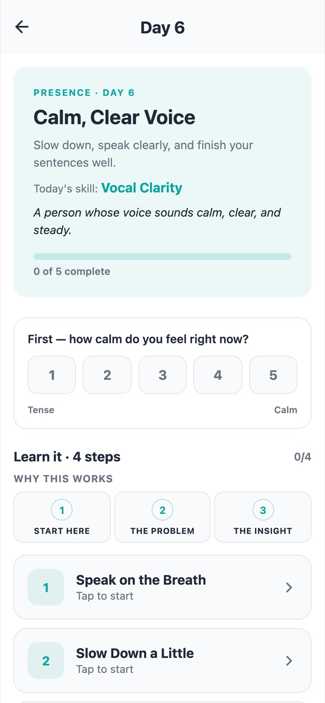
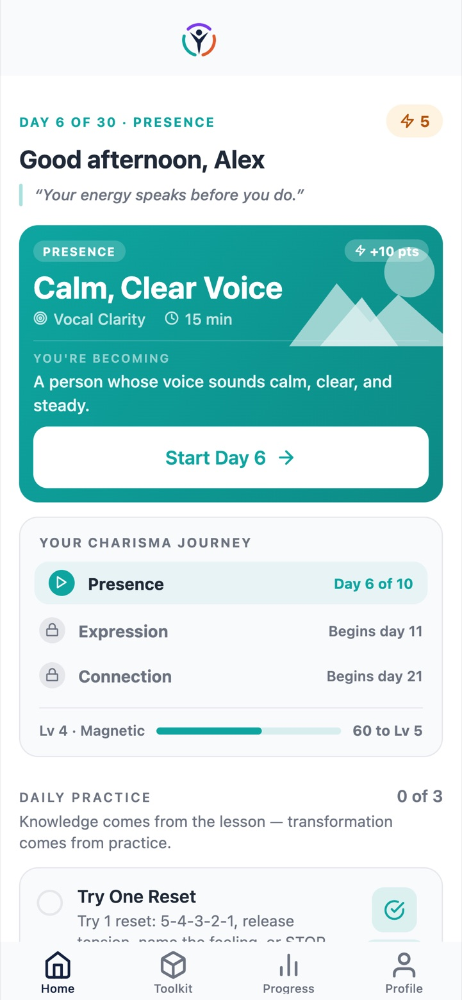
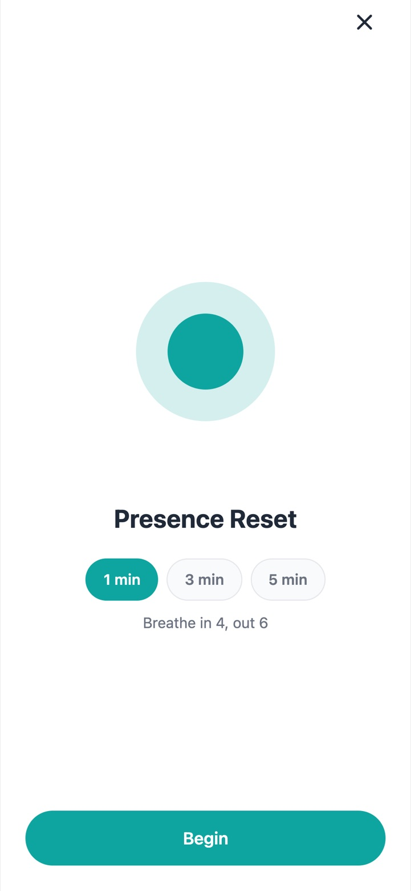
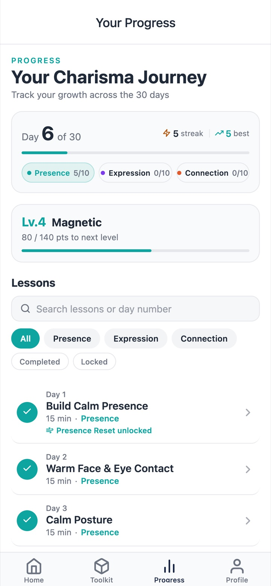

Giorni 1–10
Presenza
Corpo calmo, sguardo fermo, una voce che non ha fretta. La base che gli altri percepiscono prima ancora che tu parli.
- Build Calm Presence
- Calm Posture
- Calm, Clear Voice
30 giorni · 3 abilità · gratis
Charisma30 trasforma presenza, espressione e connessione in una breve lezione e una piccola pratica al giorno: così il cambiamento resta.
Gratis. Senza account.


Tre abilità, in ordine
Non si parte dai discorsi in pubblico. Si parte dal sentirsi stabili nel proprio corpo, poi si impara a farsi ascoltare, poi a far sentire gli altri visti.
Corpo calmo, sguardo fermo, una voce che non ha fretta. La base che gli altri percepiscono prima ancora che tu parli.
Dire quello che pensi, in modo chiaro e credibile. Pause, storie, arrivare al punto e tenere con te chi ascolta.
Leggere le persone, ascoltare le emozioni, dissentire con rispetto. La parte che trasforma l'attenzione in fiducia.
Come funziona una giornata
Ogni giorno segue lo stesso ritmo semplice: quando apri l'app sai sempre cosa fare.
Prima della lezione dai un voto a come ti senti, da 1 a 5. Lo rifai alla fine e vedi la differenza.
Una breve lezione guidata a passi chiari, con flashcard e un piccolo quiz per fissarla.
Finita la lezione si sbloccano piccole abitudini da ripetere nella vita reale nei giorni successivi.
La lezione successiva si sblocca il giorno dopo. Un passo alla volta il carisma diventa naturale.
Il tuo toolkit
Alcune lezioni sbloccano uno strumento riutilizzabile. Aprilo quando vuoi: prima di una riunione, di un appuntamento o di una telefonata difficile.
Un esercizio di respirazione guidato (inspira 4, espira 6) da 1, 3 o 5 minuti. Si sblocca il giorno 1.
Un breve reset per ansia, tensione o sovraccarico: i 5 sensi (5-4-3-2-1), sciogliere la tensione, dare un nome all'emozione, oppure STOP. Si sblocca il giorno 5.

Progressi che si vedono
Guadagni punti con lezioni e pratiche, sali di livello, tieni viva la serie e vedi esattamente a che punto sei in ogni fase.

I 30 giorni
Nessun dubbio su cosa viene dopo. Ecco tutte le lezioni del programma.
I titoli sono quelli che trovi nell'app, che per ora è in inglese.
Privato per scelta
Apri l'app e inizi. Niente registrazione, email o password.
Tutto è salvato sul tuo dispositivo. Nessun server, nessuna sincronizzazione.
Nessuno strumento di analisi, nessuna rete pubblicitaria, nessun tracker di terze parti.
Domande
Sì. L'app è gratuita da scaricare e da usare, e non ha pubblicità.
Una breve lezione più piccole pratiche da inserire nella tua giornata normale. Di solito bastano pochi minuti per le pratiche e circa un quarto d'ora per la lezione.
Non perdi nulla. La lezione successiva ti aspetta e riprendi da dove eri rimasto. Riparte la serie, non i progressi.
No. Non c'è registrazione. Nome, progressi e abitudini restano solo sul tuo telefono.
Per ora l'app è in inglese.
No. Charisma30 non carica i tuoi dati da nessuna parte e non usa servizi di analisi o pubblicità. Puoi cancellare tutto in qualsiasi momento da Profile → Reset Progress.
Tra trenta giorni entrerai in una stanza in modo diverso.
Gratis. Senza account.